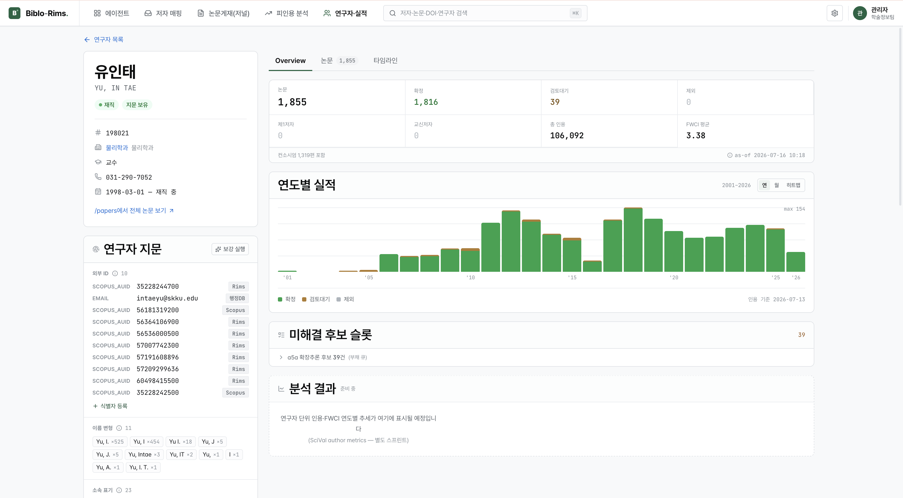
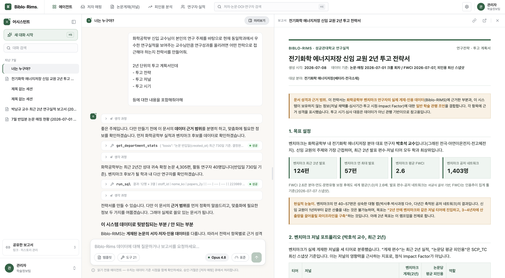

성균관대학교 학술정보관
지능형 대학 도서관 플랫폼 구축 사례
AGENDA
Section 01
사람은 의도로 묻지만, 기존 검색은 글자만 맞추고 순수 생성형 AI는 출처를 지어냅니다.
Section 02
사서가 쌓은 마크가 의미필드는 텅 빈 채 목록에 잠들어 있습니다. AI가 그 공백을 채워 데이터로 운영하는 도서관을 만듭니다.
성대 소장 실제 도서 한 권 — 제목·저자·청구기호는 원본 그대로 두고, 비어 있던 의미필드만 13축 지문으로 채웁니다.
✔ 245 제목 · 100 저자 · 020 ISBN · 260 발행 · 090 청구기호는 성대 원본 그대로 — 아래 비어 있던 의미필드만 채웁니다.
청구기호 부여는 신간 1권당 15~30분이 드는 숙련 분류 작업입니다. 비블로는 도서의 주제를 이미 파악하고 있어 분류 초안을 제시하고, 사서는 검토·승인에 집중합니다.
🧬 비블로가 이해한 주제(13축): 한강의 한국 현대 장편소설 → 분류 출발점 = 한국 현대소설
Section 03
복잡하고 어려운 텍스트 논문을 요약해 오디오와 영상으로 만들고, 읽는 논문을 넘어 보는 논문 콘텐츠를 제공합니다.
AI 생성 숏폼 영상 ↓
AI 생성 롱폼 영상 ↓
Section 04
연구자 고유의 핑거프린트로 논문·인용·FWCI를 실시간으로 추적·분석합니다. 흩어져 있던 성과가 한 사람의 지문으로 모입니다.

에이전트가 실적 데이터를 스스로 조회·분석하고, 벤치마크와 대조해 투고 전략 보고서를 근거와 함께 자동으로 작성합니다.

Section 05
이용 안내·시설 예약·자료 검색 등 다양한 문의에, 온톨로지 기반 AI가 지식 그래프로 검증된 답변을 24시간 제공합니다.
이용 안내·시설·자료 문의를 문장 그대로 이해합니다.
지식 그래프 기반으로 관련 정보를 추론합니다.
막연한 안내가 아닌, 출처를 갖춘 답변을 제시합니다.
운영 시간과 무관하게 상시 문의에 대응합니다.
Section 06
성균관대 '번개독서-번독'은 관심 도서와 취향을 기반으로 즉석 독서모임을 매칭해, 도서관을 소통과 커뮤니티의 공간으로 확장합니다.
은유·키워드로 독서 취향을 간단히 진단합니다.
비슷한 관심사의 이용자와 즉석 모임을 연결합니다.
모임 개설·참여·기록을 앱에서 관리합니다.
도서관을 커뮤니티 허브로 확장합니다.